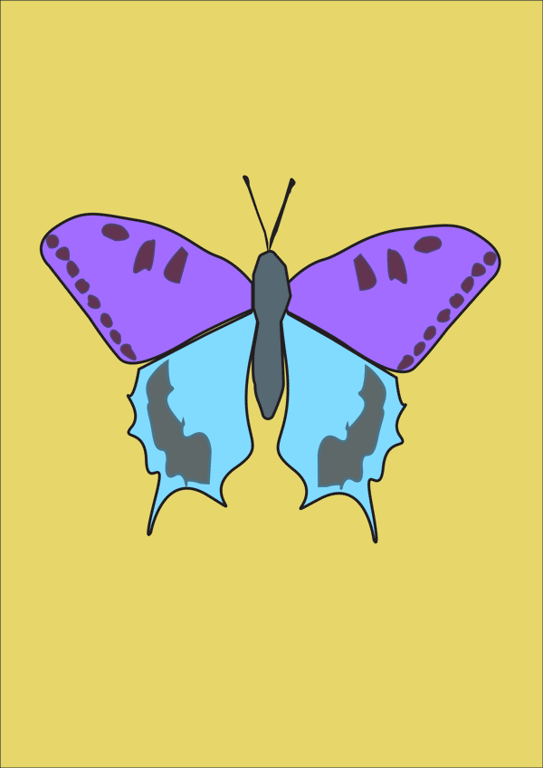
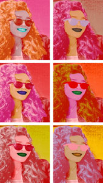

Vježbe
Ovdje se nalaze slike i multimedijski elementi zadataka s vježbi i projektnih zadataka koje sam radila tokom semestra.
Vježba 1
Kreiranje fonta
Vježba 2a i 2b
Kreirala sam proizvoljan broj krivulja čije su točke poravnate prema mreži koordinatnog sustava, definirala sam im boju i debljinu obruba te između njih napravila interpolaciju (Blend). Koristeći vlastiti font s prošle vježbe preko krivulja ispisala sam tekst i od njega napravila masku. .
Vježba 3a i 3b
Multipliciranje objekata nacrtanima sa alatom Pen. Objekte sam crtala ili kao konture odabrane slike po izboru
Tehnikama kopiranja tipkom Alt (Duplicate) više sam puta kopirala oblike, aplicirala drugačijim bojama kreiranim u novoj Color grupi (Swatch).

Vježba 4a i 4b
Izrađivala sam složene objekte koji se sastoje od više staza metodama spajanja (Unite/Compound path) ili oduzimanja oblika (Difference/Subtract). Aplicirala različite vrsta gradijenata od dvije ili više boja.
Projektni zadatak 1
Iskoristila sam vlastiti font za riječ "Voće". koristila sam zadane elemente i tehnike (Bezierove krivulje, gradijenti, maskiranje, transformacije, mesh) prema zadanoj slici.
Vježba 5a i 5b
Retuširala sam zadane slike.
Vježba 6a i 6b
Koloriranje slike koje se može primijeniti na crno-bijele slike ili slike u boji kojima želimo promijeniti nijansu određenih područja.
Vježba 7
Kombinirala sam više fotografija izrezivanjem dijelova različitih slika i spajanjem u jednu cjelinu. Pritom je najvažnije kvalitetno selektirati dijelove koje želimo izrezati kako bi se što bolje uklopili u finalnu sliku. U ovoj vježbi prolazimo kroz različite tehnike selektiranja jednostavnih i složenih oblika.
Projektni zadatak 2
Kreiranje slike u GIMPu koristeći retuširanje, fotomontažu i koloriranje s minimalno određenim brojem fotografija iz skupina, uz korištenje alata za retuširanje, selekcije, transformacije, koloriranje, maske, korekcije boja, sjene, tekst, transparencije slojeva, te logično organiziranje slojeva i kanala, sve spremljeno u izvornim formatima sa završnom slikom u JPEG-u.
Vježba 8a
Ova vježba se bavi osnovama obrade video materijala i uvođenjem multimedije u video projekt. Rezultat vježbe je kinemagraf čija je karakteristika spajanje statične i pokretne slike.